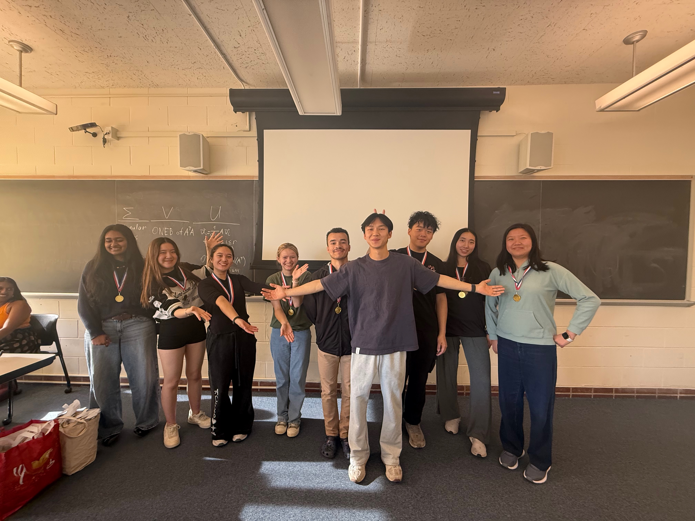
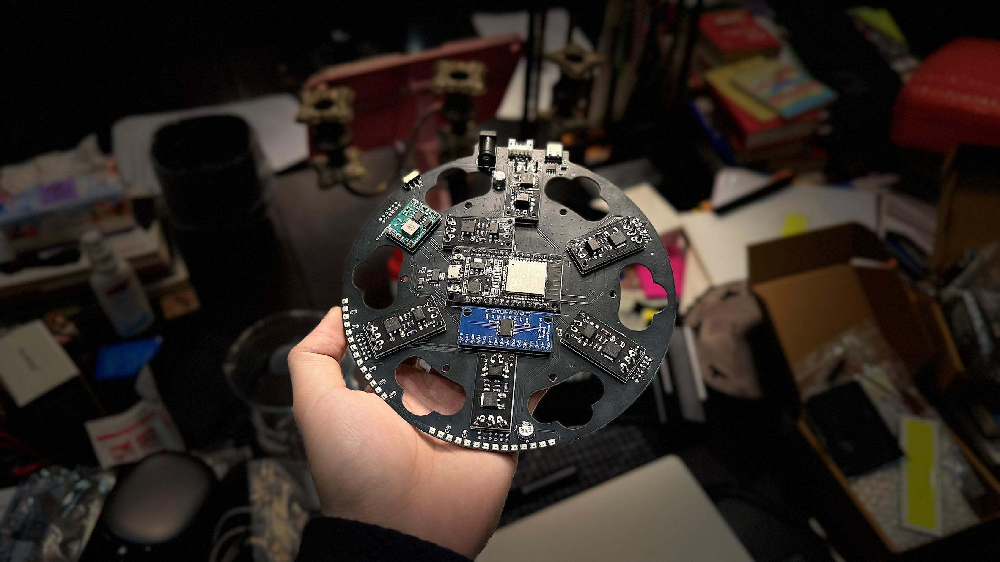

I am a project manager on my project team, a student-led organization where members build ambitious hardware and gain hands-on product development experience. I lead a project building a smart wearable sleeve that monitors heart rate, blood flow, and posture, targeting key complications for patients with Ehlers-Danlos syndrome (EDS). I also created and led our team's first new member education program, teaching new members breadboard electronics, CAD, and PCB design, and guiding each of them through a complete product development cycle on a project of their own choosing.

I designed the PCB for the second generation of a patented modular bioreactor developed by a friend. I am now leading the design of an automation system that integrates directly into the bioreactor, enabling automated operation and more powerful AI-driven biomanufacturing.